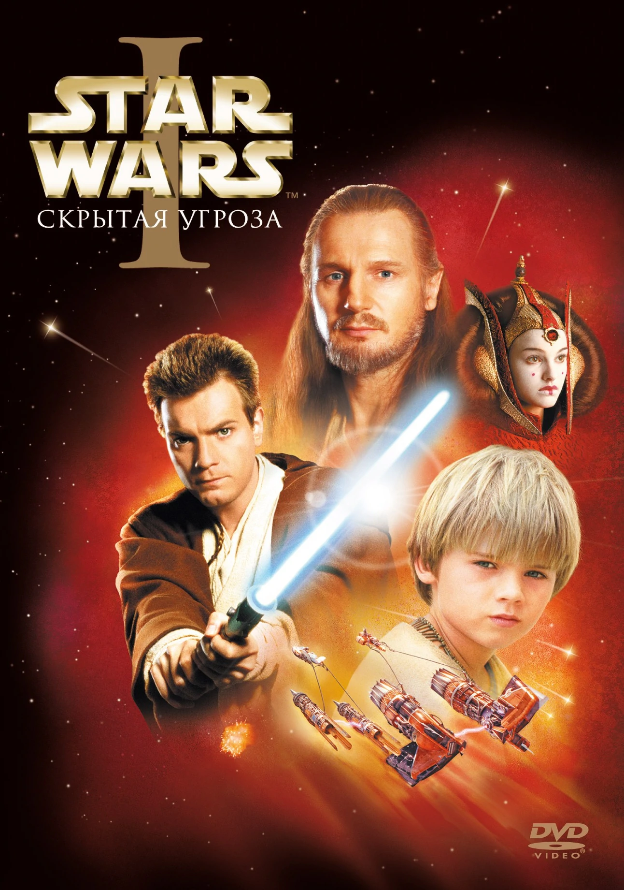
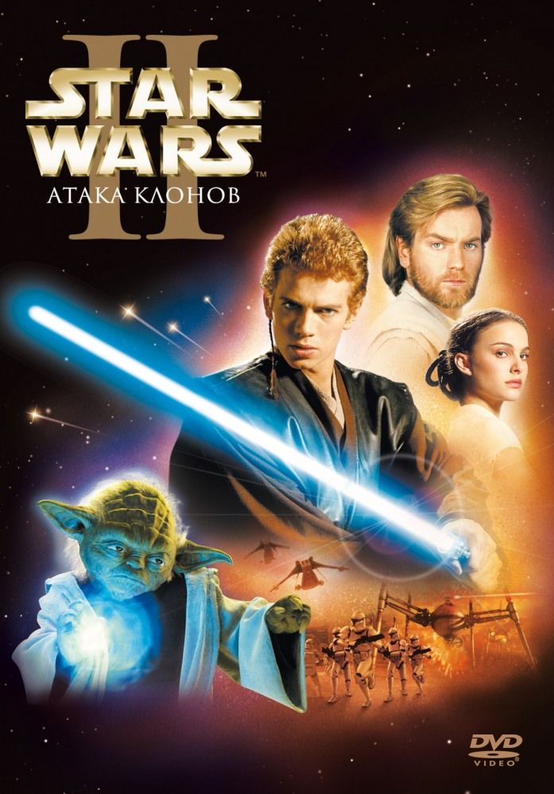
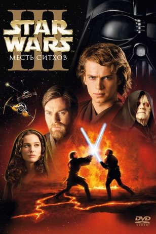
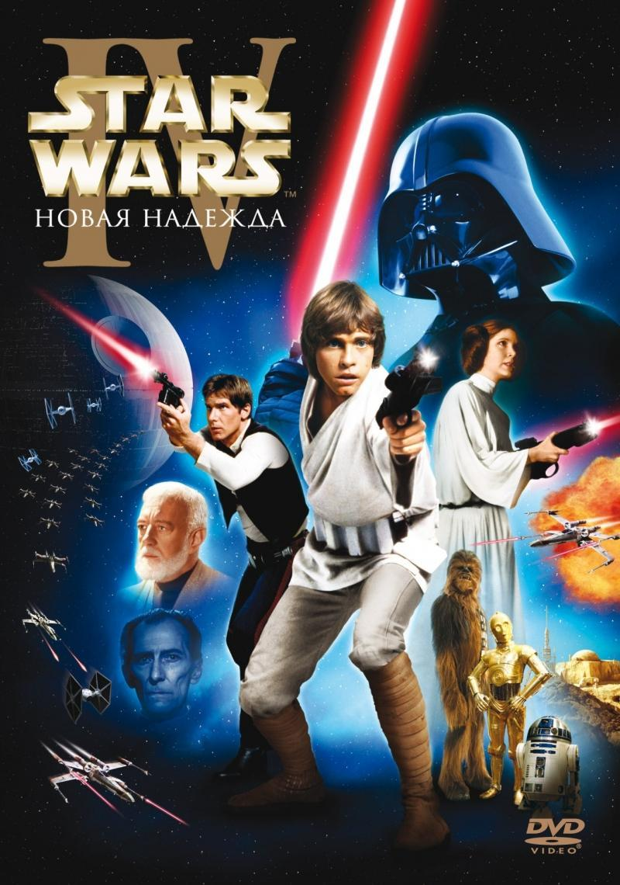
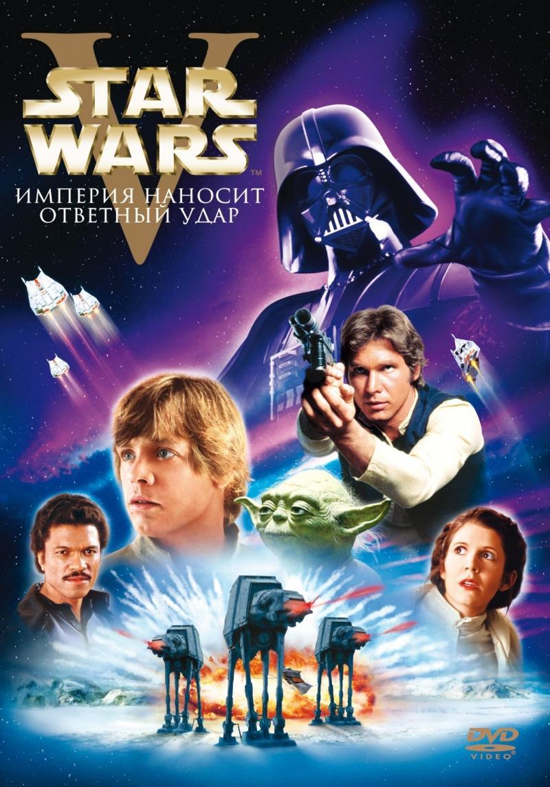
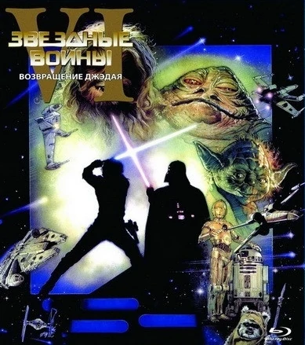
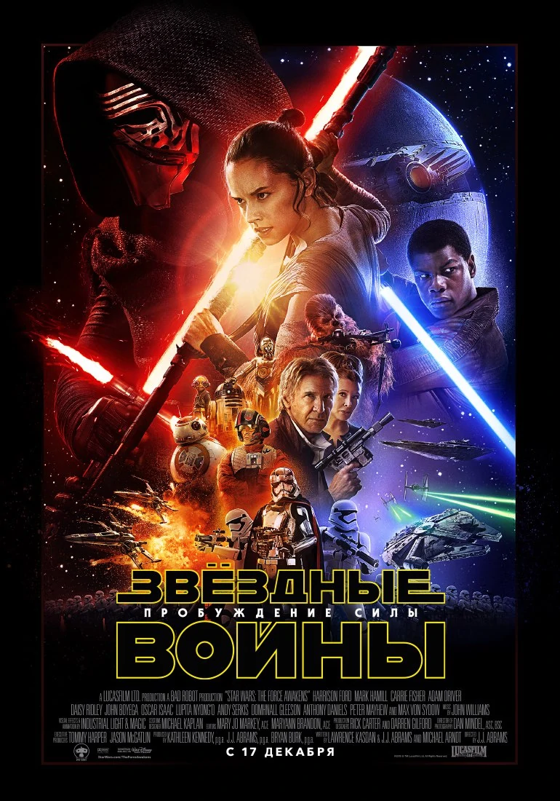
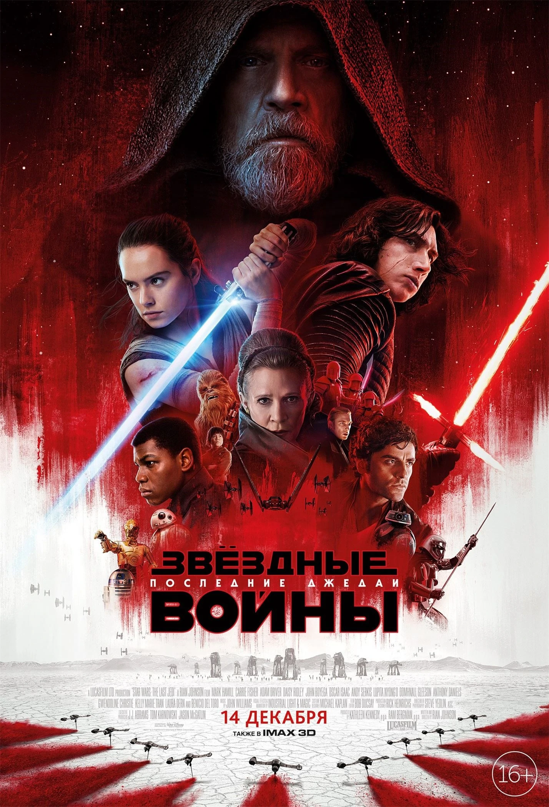
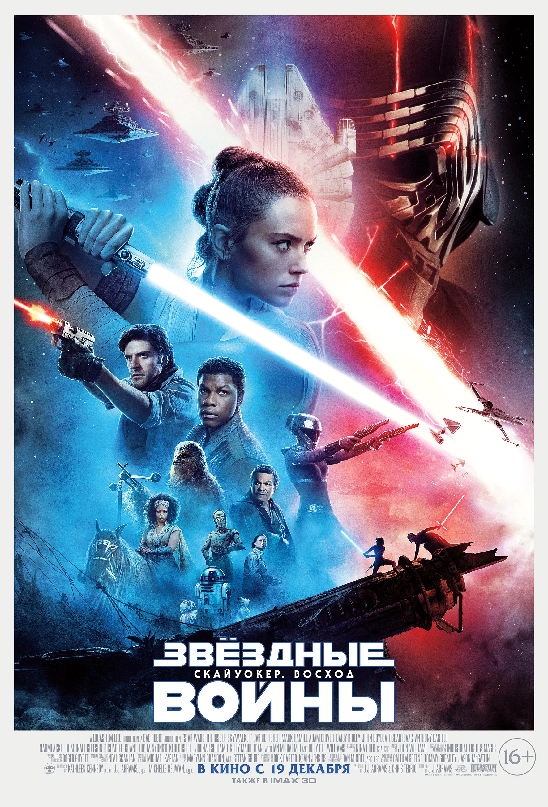
О вселенной
«Звёздные войны» — североамериканская фантастическая медиафраншиза, созданная Джорджем Лукасом. В ней описываются приключения множества персонажей, происходящие «давным-давно, в далёкой-далёкой галактике». С 1976 года по настоящее время в рамках вселенной «Звёздных войн» были выпущены сотни книг и комиксов для аудитории всех возрастов, несколько анимационных сериалов, множество компьютерных и настольных игр, 9 полнометражных фильмов-эпизодов и несколько фильмов спин-оффов. Фильмы и комксы рассказывают о постоянном противостоянии тёмной стороны силы и светлой, основными представителями которых являются ситхи и джедаи соответсвенно. Фильмы состоят из девяти связанных между собой эпизодов. По вселенной первый рассказывает о самых ранних событиях, а девятый о самых поздних. Но снимали и выпускали эти фильмы по-другому: сначала выпустили 4-ый, 5-ый и 6-ой эпизоды и только после этого выпустили 1-ый, 2-ой и 3-ий эпизоды, а в 2015 году выпустили 7-ой эпизод, после чего вышел 8-ой в 2017 и 9-ый в 2019. По заявлениям режиссёров 9-ый фильм был последний, но сейчас начали выпускать сериалы в достаточно большом количестве и скорее всего, эта инициатива будет держаться ещё минимум пять лет.Картинки всех девяти эпизодов:
Жители
В "далёкой-далёкой галактике" проживало очень много различных существ и жителей, я расскажу вам о самых популярных:
Джедаи — адепты светлой стороны Силы, служащие Ордену джедаев и использующие энергию Силы. Главным оружием джедаев был световой меч с лезвием из чистой энергии. Джедаи боролись за мир и справедливость в Галактической Республике, как правило, против своих заклятых врагов, Ситхов и тёмных джедаев, являвшихся сторонниками тёмной стороны Силы. На протяжении всей своей истории Орден подвергался почти полному уничтожению пять раз: во времена Империи ситхов Дарта Ревана и вскоре после этого, Триумвиратом ситхов под предводительством Дарта Нихилуса, во время Первой чистки джедаев, спустя почти 4000 лет после нее во время Великого истребления джедаев, начатого Дартом Сидиусом и затем, спустя столетие, во время Третьей чистки джедаев, произошедшей в Галактической Империи Дарта Крайта. Однако каждый раз Орден возрождался, и в том была немалая заслуга семьи Скайуокер, сыгравшую важную роль в истории джедаев.
Представители: Энакин Скайуокер - вокруг этого персонажа крутится сюжет всех фильмов и половины сериалов про звёздные войны, где он зачастую исполняет главную роль. Он жил на пустынной планете Татуин, где его по счастливым (не для всех) обстаятельствам нашли два джедая, ученик - Оби-Ван Кеноби и учитель - Квай-Гон Джинн, прилетевшие на эту планету вместе с предводительницей старой республики. Посколольку у них не было топлива они были вынуждены совершить экстренную посадку на эту планету. Позже выяснилось, что Энакин является Избранным и по преданию должен окончательно искоренить тёмную сторону силы. Он начал обучаться у Оби-Вана Кеноби, поскольку Квай-Гон Джинн был убит лордом ситхов - Дартом Молом. Но вопреки преданию Энакин стал лордом ситхов - Дартом Вейдером, поскольку он потерял свою мать и жену, которую хотел спасти, но сам её и убил. Перед смертью жена Энакина родила двух детей - Люка Скайуокера и Лею Органу, но после перехода Энакина на тёмную сторону силы, Оби-Ван спрятал обоих детей от отца, дабы они также не стали приспешниками тёмной стороны. Энакин был убит его новым учителем - Дартом Сидиусом, когда Сидиус бил Люка молниями, Дарт Вейдер понял, что не может больше быть приспешником тёмной стороны Силы и скинул Сидиуса в дыру, снова став Энакином Скайуокером, но Сидиус успел повредить костюм Энакина, задев системы жизнеобеспечиния. Энакин попросил Люка снять с него шлем, чтобы Энакин увидел его своими глазами, после чего умер. Когда Энакина похоронили, его призрак силы появился вместе с призраками Йоды и Оби-Вана во время праздника победы над империей.
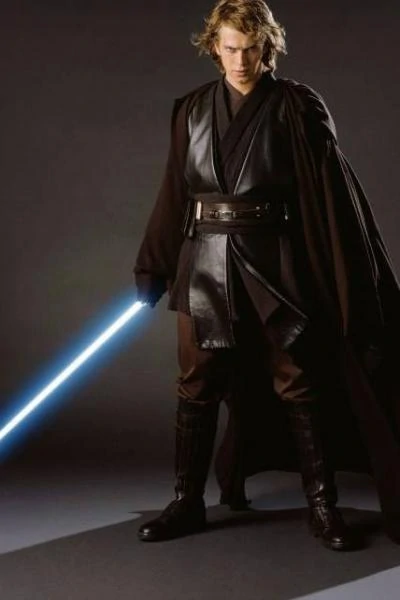Йода - гранд-мастер Ордена джедаев, обладающий долголетием. Йода частично обучал Оби-Вана Кеноби и Энакина Скайуокера, но серьёзно он обучал только Люка Скайуокера, сделав из него очень могущественного джедая. В бою на световых мечах Йода был прекрасным фехтовальщиком, с которым могли сравниться только Дарт Сидиус, Граф Дуку, Мейс Винду, Оби-Ван Кеноби и Энакин Скайуокер. Йода также искусно владел силой, умея поднимать такие большие объекты, как истребитель типа X, или огромные колонны, он также мог отражать лазерные снаряды бластеров и молнии, направленные на него. Умер на Дагобе естественной смертью, слившись с Силой.
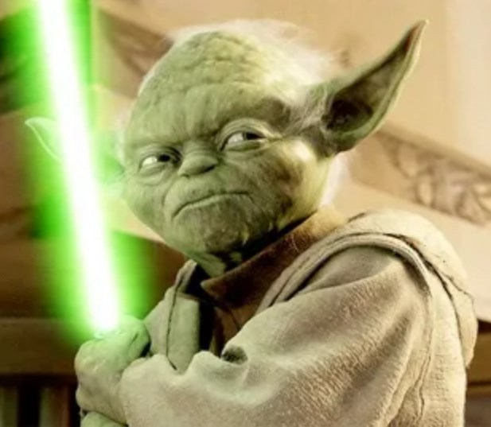Оби-Ван Кеноби, позже известен как Бен Кеноби - мастер-джедай, ученик Квай-Гона Джинна и первый учитель Люка Скайуокера. Оби-Ван стал первым джедаем, нанёсшим поражение лорду ситхов Дарту Молу приблизительно за тысячу лет, во времена Старой республики. Перед тем как Оби-Ван убил Дарта Мола, последний на глазах Оби-Вана убил его учителя - Квай-Гона Джинна, и Оби-Ван в порыве гнева стал абсолютно непредсказуемо наносить удары, из-за чего гораздо более хорошо обученый Дарт Мол не смог обороняться и в результате остался без нижней части тела, свалившись в дыру под ним. Позже Оби-Ван начал обучать Энакина, а после перехода последнего на тёмную сторону силы, начал обучать его сына - Люка Скайуокера. Хан Соло, Лея органа, Люк и Оби-Ван проникли на Звезду Смерти, где произошла последняя дуэль Оби-Вана с Дартом Вейдером, в которой он по неизвестным причинам поднял меч, подставляясь по удар Дарта Вейдера, и в тот момент, когда меч Дарта Вейдера находился в сантиметре от Оби-Вана, последний растворился, слившись с силой, недав Вейдеру убить его. Оби-Ван прекрасно владел световым мечом, при этом он прекрасно владел силой, умея проворачивать такой трюк как обман разума, заставлявший противника подчиняться его воле.
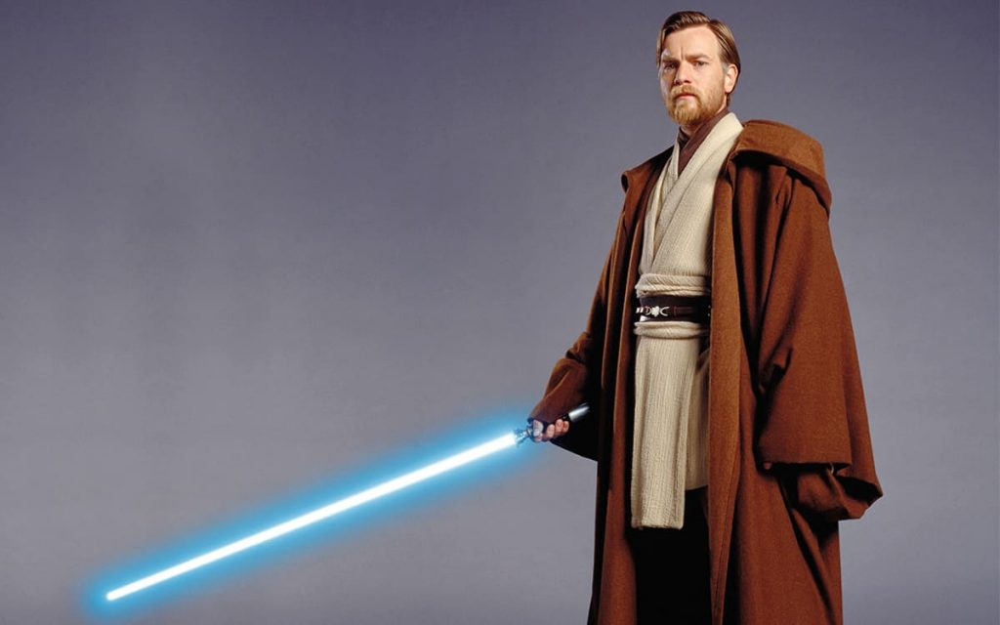Люк Скайуокер - сын Дарта Вейдера, брат Леи Органы, ученик Оби-Вана и Йоды, учитель Кайло Рена и Рей, могущественнейший джедай по мнению большинства фанатов звёздных войн. Люк был обычным фермером на Таутуине, до того момента как познакомился с Оби-Ваном Кеноби, который начал его обучать, а Йода закончил обучение Люка. Люк дважды дрался с Дартом Вейдером, первый раз в облачном городе, а второй на звезде Смерти, так же проекция его силы дралась с его племянником - Кайло Реном. После смерти императора Палпатина (он же Дарт Сидиус), Люк набрал детей, одаренных силой, в том числе и Кайло Рена и отправился обучать их, чтобы развить новое поколение джедаев. Но из-за того что Кайло Рен был потмком великого ситха - Дарта Вейдера, он в результате последовал примеру деда и перешёл на тёмную сторону Силы, убив всех джедаев, которые обучались вместе с ним. После такого провала, Люк ушёл в изгнание, но долго, спокойно жить ему не дали. К нему пришла Рей с его старым мечом, который до того как попал к нему в руки, принадлежал Энакину. Впослдествии Люк занялся обучением Рей, подготовив её к битве с Кайло Реном, в результате он сам принял в ней участие создав проекцию силы, которая дралась вместо него, это послужило отвлекающим манёвром для войск Первого Ордена и Кайло Рена, и войска Сопротивления смогли улететь с планеты. Проекция силы отняла у Люка слишком много сил, в результате чего он умер, слившись с Силой. Люк, как и все его учителя прекрасно владел световым мечом, он даже смог ранить Дарта Вейдера в плечо, но из-за недостатка опыта потерял руку. Люк, также как и Йода умел с помощью Силы поднимать большие объекты.
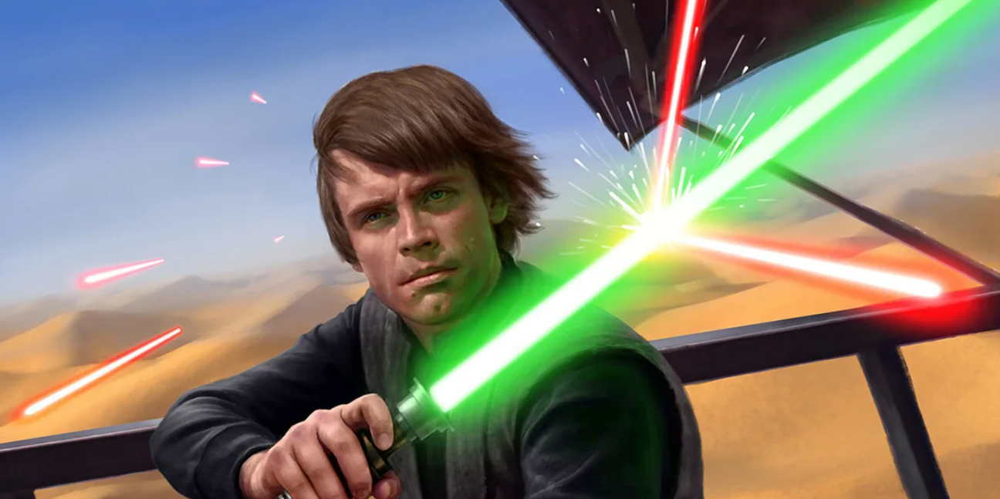Рей Палпатин - ученица Люка Скайуокера, внучка коварного императора Палпатина. Рей была мусорщицей, влачащей жалкое существование на пустынной планете Джакку, считавшая что когда-нибудь родители, продавшие её Ункару Платту для сохранения её жизни, вернутся за ней. Но однажды она встретилась с дроидом BB-8 который спасался от Первого Ордена, через несколько дней Рей встретила Финна, который летел вместе с По Дэмероном за BB-8, но их корабль сбили. Рей и Финн отправились возвращать BB-8 Сопротивлению на Соколе Тысячилетия, по пути встретив Хана Соло вместе с Чубаккой. Удрав от бандитов, которые преследовали Хана Соло, вся команда улетела на планету Такодана, куда в скором времени прилетел Первый Орден вместе с Кайло Реном, который смог взять Рей в плен, полностью обездвижив её с помощью силы. На "Старкиллере" Рен с помощью силы пытался выведать у Рей где находится BB-8, но из-за того что Рей имела огромный потенциал в использовании Силы, она смогла противостоять Рену, который в конечном итоге отправился к верховному лидеру Первого Ордена - Сноуку, отчитавшего его за провал. В это время Рей, начавшая осозновать на что она способна, смогла заставить освободить её штурмовика-охранника, используя обман разума. В результате она встретила Финна, Соло и Чубакку, которые собирались нанести непоправимый урон "Старкиллеру". Соло и Чубакка отправились минировать "Старкиллер", но Соло убил Рен. После такого неожиданного поворота событий, Чубакка подорвал мины и вся команда начала отступать. В лесу Рей и Финн встретили Рена который был морально подавлен тем, что убил своего отца. Рен оглушил Рей, откинув её в дерево, после чего Финн сошёлся с Реном в бою на световых мечах, в котором Рен тяжело ранил Финна, откинув его меч в сторону. В результате Рей смогла победить Рена, неуспев добить его так как планета начала дробиться на куски. Забрав Финна с собой, она улетела вместе с Чубаккой на Соколе Тысячилетия. База "Старкиллер" была взорвана и Сокол вернулся на базу Сопротивления с остатками флота сопротивленцев.
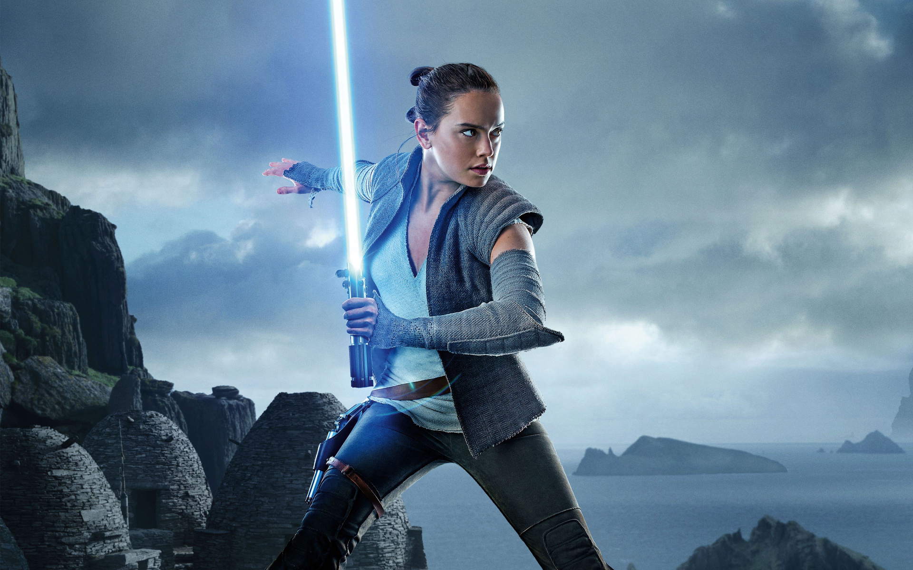Ситхи — адепты Силы, придерживавшиеся пути Тёмной стороны Силы и определённого кодекса ордена ситхов.
Представители: Дарт Сидиус - ученик Дарта Плэгаса, учитель Дарта Мола, графа Дуку, Дарта Вейдера. Могущественный и коварный лорд Ситхов, предательски убивший своего учителя, когда тот спал. Он также был доволен когда его учеников убивали, потому что на смену им, приходили более могущественные ученики. Дарт Сидиус состоял в сенате республики, известный как канцлер Палпатин, в то время как о его настоящем происхождении никто не знал. Он обучал Дарта Мола, который убил одного из основных противников Палпатина - Квай Гона Джинна. В конце концов Энакин догадался, что Палпатин ситх, рассказал об этом Мейсу Винду, и тот отправился с ещё несколькими джедаями в гости к Палпатину, последний смог убить всех кроме самого Мейса Винду, и тогда он пустил в ход своё основное оружие - молнии, но Мейс Винду смог заблокировать удары, прижав Палпатина к стенке. В последний момент появился Энакин, замешкался, но в результате достал свой световой меч и отрубил руку Мейсу Винду, после чего Палпатин скинул Мейса в окно, а Энакин перешёл на тёмную сторону Силы. Палпатин сверг сенат, основав Империю, став её предводителем. Он построил Звезду Смерти, параллельно обучая Дарта Вейдера. Когда первую Звезду Смерти взорвали, Палпатин принялся строить следующую. В конце концов Вейдер привёл Люка Скайуокера к Палпатину, и тот захотел чтобы Люк убил своего отца, став нвым учеником Сидиуса. Но Люк не повелся на провакации, за что Палпатин атаковал его молниями, Люка спас Вейдер, а Палпатин недолго летел вниз, после чего взорвался. Но ко всеобщему огорчению Палпатин занимался собственнным клонированием и когда его нашел Рен, показал ему свой Последний Орден. Потом к нему пришла Рей, которую он хотел сделать новой императрицей, но в последний момент появился Рен со световым мечом Энакина Скайуокера, по пути Кайло уничтожил всех рыцарей Рен. Вместе с Рей, Кайло Рен смог победить Палпатина. Палпатин в основном использует молнии и Силу, свой меч с весьма красивой рукоятью он пускал в ход только против группы джедаев во главе с Мейсом Винду.
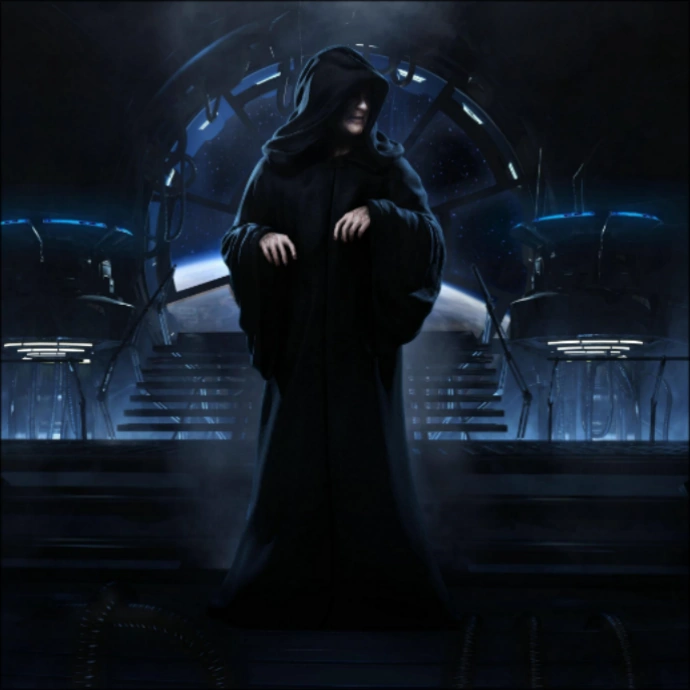Дарт Мол - ученик Дарта Сидиуса. Дарт Мол был отдан Дарту Сидиусу ещё в детстве, последний обучал его достаточно долго, сам являясь при этом учеником. Спустя некоторое время Дарт Сидиус представляет Дарта Мола Сепаратистами, и Мол повергет их всех в страх. Затем Мол обнаруживает Оби-Вана, его учителя и начинает преследование. Используя свой корабль и своих разведывательных дроидов, он находит последних на Татуине, и когда Оби-Ван, Квай-Гон, Энакин Скайуокер и королева Набу собираются улетать с Татуина, нападает на Квай-Гона, но уставший Квай-Гон успевает прыгнуть на трап пролетающего мимо корабля королевы. В следующий раз Дарт Мол вступает в дуэль на Набу сразу с двумя противниками - Квай-Гоном Джинном и Оби-Ваном Кеноби. Воспользовавшись лазерными вратами, которые раздели всю троицу, Мол смог вести дуэль только с Квай-Гоном и, оглушив его ударом рукояти меча в подбородок, проткнул его насквозь. После этого не на шутку разозлившийся Оби-Ван разрубил Мола пополам, и Мол отправился в путешествие по вентиляционной шахте. Мол использовал в бою двухклинковый стветовой меч и силу, в основном полагаясь на скорость и внезапность.
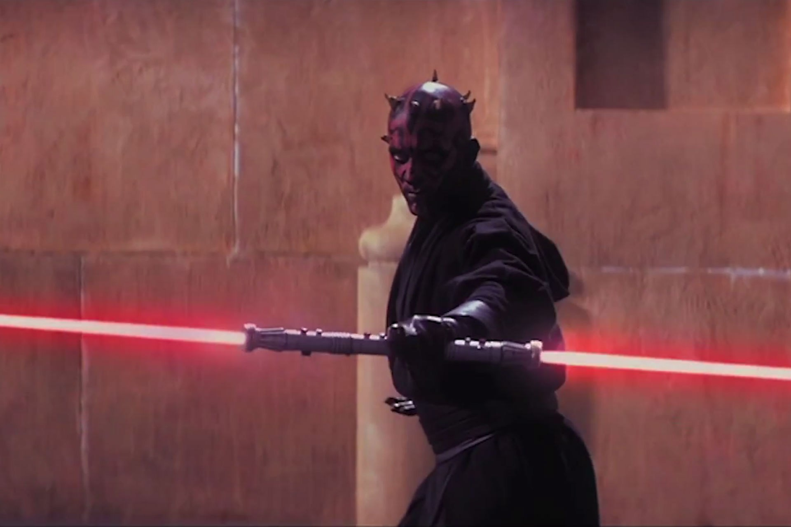Граф Дуку - или Дарт Тиранус, ученик Йоды, учитель Квай-Гона Джинна и Комари Воса. После перехода на тёмную сторону стал учеником Дарта Сидиуса, который в результате его предал. Дуку, в отличии от других учеников Дарта Сидиуса, не сразу стал лордом ситхов, когда стал работать вместе с Палпатином. Сначала он просто ушёл из ордена джедаев, чем очень сильно удивил его учителя Йоду, он стал работать с Палпатином не являясь при этом ни джедаем, ни ситхом, только спустя некоторое время он стал лордом ситхов, используя в основном дипломатию, но когда дело доходило до схватки, он использовал свой световой меч с искревлённой рукоятью, и также как и Палпатин - молнии. В первой дуэли против Энакина и Оби-Вана, он смог тяжело ранить Оби-Вана и отсечь руку Энакину, но появившийся Йода смог спасти их от колонны, которую обрушил на них Дуку, сам Дуку спешно улетел, поскольку ему не хватило мастерства одалеть Йоду. Спустя некоторое время он взял Палпатина в плен на корабль генерала Гривуса. Орден джедаев, считавший обманувшего их Палпатина своим другом, выслал за ним Энакина и Оби-Вана. Граф Дуку встретил их, смог оглушить Оби-Вана и вступил в дуэль с Энакином. Энакин смог отрезать руку противнику, забрав его меч, после чего Палпатин сказал Энакину добить Дуку. Дуку, ошарашенный таким поворотом, считавший Палпатина своим другом, понял что он являлся всего лишь инструментом Сидиуса для достижения последнего своей цели. Перед тем как Энакин обезглавил Дуку, граф подумал - "Путь ситхов — предательство". Дуку был прекрасным фехтовальщиком и несмотря на склонность своих лет не стеснялся использовать акробатические трюки во время дуэли.
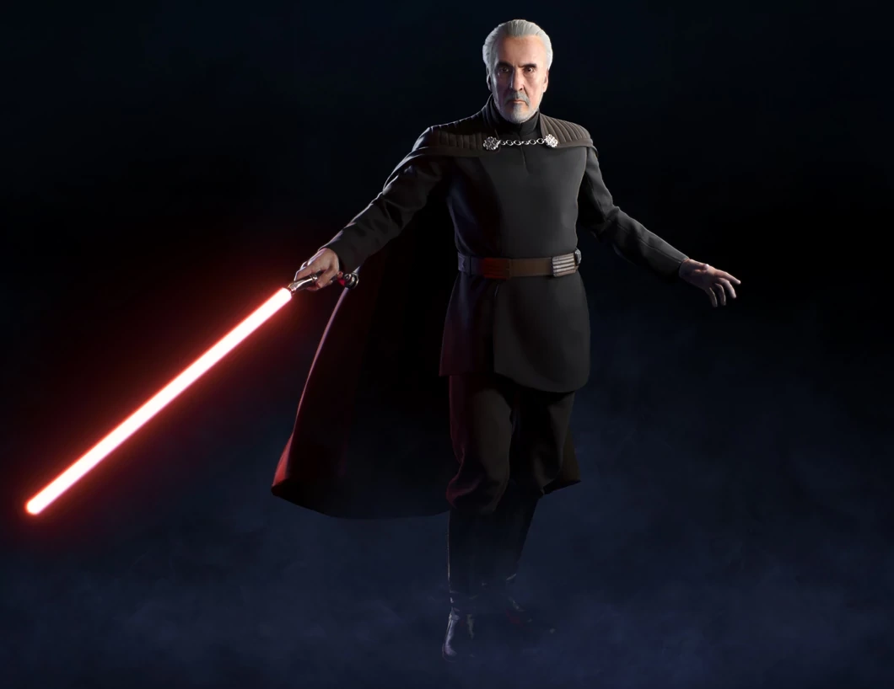Дарт Вейдер - в прошлом Энакин Скайуокер, ученик Оби-Вана Кеноби и учитель Асоки Тано. Когда Энакину приснился сон, в котором его жена - Падме Амидалла умерла посе родов, он рассказал об этом Палпатину, который использовал это как рычаг, для того чтобы переманить Энакина на тёмную сторону. Однажды Палпатин рассказал Энакину о том, что с помощью тёмной стороны можно сделать так, что Падме не умрёт. Энакин начал подозревать, что Палпатин - тот самый ситх, которого разыскивает весь Орден джедаев. Он поспешил доложить об этом Мейсу Винду, который сказал Энакину ждать его возвращения. Но Энакин не смог удержаться и полетел туда, где по его предположениям Винду встретился с Палпатином. Энакин не мог выдержать смерть его друга Палпатина и потому отсёк Винду руку, перейдя на тёмную сторону. Палпатин дал ему имя Дарт Вейдер, дав ему первое задание - истребить всех джедаев. Энакин отправился вместе с 501-ым легионом клонов в храм джедаев, где нещадно вырезал джедаев всех возрастов - от детей до стариков. Спустя некоторое время Оби-Ван пришёл в полыхавший храм вместе с Йодой. Оби-Ван был очень сильно удивлён, поняв что некоторые джедаи погибли от светового меча, а не от бластера. По камерам он увидел что джедаев убил Энакин, расстроившись, он полетел вместе с Падме на планету Мустафар, где Падме убил Энакин, сам того не хотя. После продолжительной дуэли Оби-Ван отсёк ноги Энакину, и Энакин начал частично подгорать. Оби-Ван ушёл, забрав с собой меч Энакина, но через несколько секунд прибыл Палпатин, успев спасти Энакина от неминуемой гибели. Из-за многочисленных травм Энакина, Палпатин был вынужден создать для своего ученика костюм жизнеобеспеченья. Дарт Вейдер начал истреблять выживших джедаев, узнав о Люке, Палпатин приказал Вейдеру привести Люка к нему. Но когда Сидиус начал пытать Люка молниями, Вейдер не выдержал и скинул Палпатина в шахту. Умирая, он успел поговорить с Люком без шлема. Дарт Вейдер использовал в бою Силу и свой световой меч. Он часто прибегал к удушению Силы, казнив таким образом несколько человек, причём зачастую это были свои.
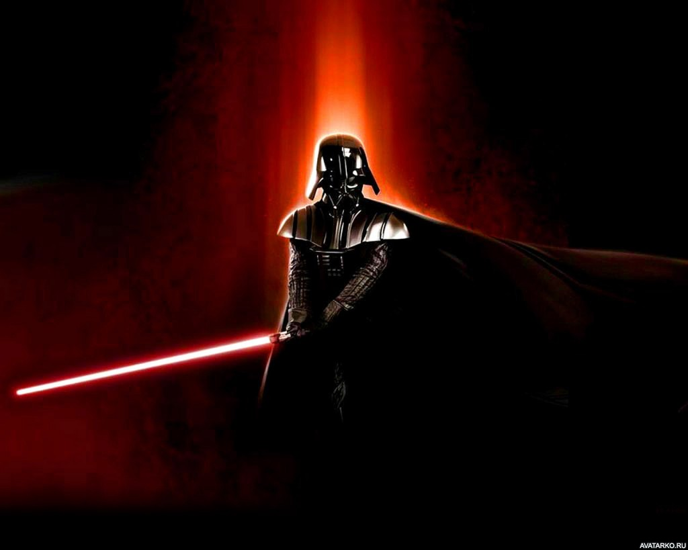Кайло Рен - или Бен Соло на светлой стороне Силы. Сын Леи Органы и Хана Соло, внук Энакина Скайуокера, племянник и ученик Люка Скайуокера. После перехода на тёмную сторону стал учеником Сноука и взял себе имя Кайло Рен, в честь рыцарей Рен, предводителя которых он убил и стал управлять этой группировкой. Однажды ночью Люк увидел в Бене тёмную сторону, которая поглащала его. Люк, понимавший что Бен представляет огромную угрозу для нового Ордена джедаев, хотел убить его, но, опомнившись опустил свой световой меч. В этот момент испугавшийся Бен свалил на Люка каменную стену с помощью Силы. Думая что Люк погиб, он ушёл из лагеря джедаев. Позже он связался со Сноуком и стал у него обучаться. Узнав что Люк жив, Рен стал искать его по всей галактике. Занявшись поисками BB-8, в котором хранился оставшийся фрагмент карты, он взял в плен Рей, пытаясь выпытать из неё местонахождение дроида, он понял что Рей обладает огромной Силой. Доложив об этом Сноуку, он узнал что Рей сбежала. Встретившись со своим отцом, он долго мешкая, убил его. Окончательно убитый морально, он начал преследовать Рей и Финна в лесу. После своего очередного провала, он пришёл к Сноуку, отчитавшего его за слабость. Рен начал поиски Рей, иногда связываясь с ней с помощью Силы. В результате Рей сама прилетела на корабль Сноука, считая что Рена можно было вернуть на светлую сторону. Рен доставил Рей к Сноуку, где после продолжительного диалога, Сноук приказал Рену убить Рей, но Рен с помощью Силы смог повернуть меч, лежавший рядом со Сноуком и разрубил Сноука пополам. После этого Рен и Рей разобрались со стражей Сноука. Рей, считавшая что Рен снова стал Беном Соло, попросила его прекратить огонь по транспортникам Сопротивления, но ошиблась, Рен просто убрал конкурента. После этого, Рей, забравшая свой световой меч, сбежала с корабля, А Рен остался лежать без сознания. Спустя некоторое время Рен, узнав что Палпатин жив, направился к нему, чтобы убить его, считая его своим конкурентом, но Палпатин предложил Рену огромный флот взамен на Рей, которую Рен должен был привести к нему. Рен выследил Рей на обломках второй Звезды Смерти. После небольшого диалога, Рей вступила с ним в дуэль, в которой Рен почти победил, но его отвлекла умирающая мать, воспользовавшись моментом Рей проткнула Рена мечом, но через секунду тоже почувствовала смерть Леи. Восстановив Рена с помощью Силы, она улетела на Экзегол на корбале Рена. Через несколько мгновений Рену привиделся призрак его отца, на этот раз он не проткнул его мечом, а наоборот выкинул свой меч в океан, снова став Беном Соло. Поняв что Рей грозит опасность в лице Палпатина, он раздобыл истребитель СИД и отправился на Экзегол. Увидев там корабль Рей, он побежал внутрь храма, встретив там рыцарей Рен, которые поняли что он снова на светлой стороне. Рыцари напали на Бена, поскольку тот не имел оружия, они с легкостю его одолели, но в последний момент Рей передала ему с помощью Силы меч Энакина. Бен, являвшийся прекрасным фехтовальщиком, смог одолеть всех рыцарей Рен, которые значительно превосходили его числом. Побежав к Рей, он параллельно расстрелял всех охранников Палпатина. Дойдя до места, где Рей посвещали в ситхи, он вместе с ней вступил в бой с Палпатином. Победив Палпатина, Бен отдал Рей всю свою энергию Силы. Спася жизнь Рей, он сам при этом умер, слившись с Силой. В бою Рен использовал свой крестообразный, трёхклинковый световой меч, полагаясь на скорость. Он также искусно обращался с Силой, умея полностью обездвижить противника. У Рена также был собственный истребитель - Тихий СИД Кайло Рена, на котором он нанёс очень большой урон главному флагману Сопротивления.
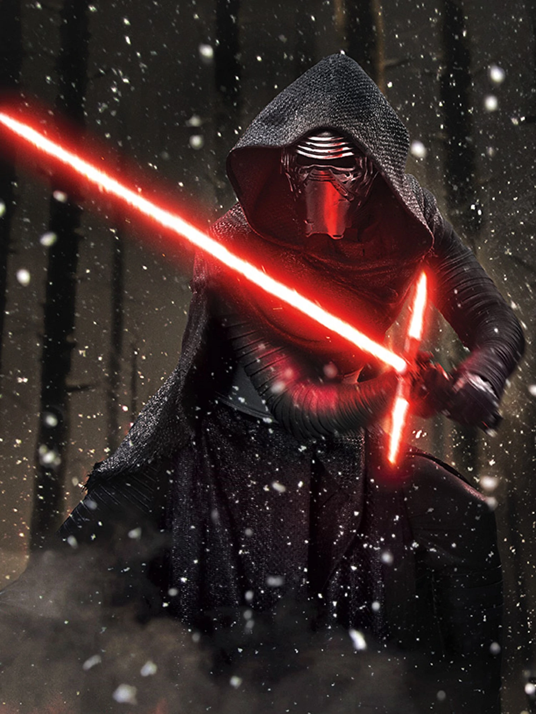Тихий СИД Кайло Рена:
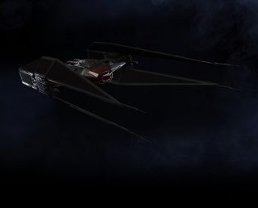Основные места действий
Все события, описанные во вселенной звёздных войн где-то происходили, я расскажу вам об основных местах.
Космос - в космосе происходило большинство самых главных и самых значимых событий - уничтожение обеих Звёзд Смерти, преследование кораблём Сноука остатков Сопротивления, уничтожение Альдераана, уничтожение корабля Сноука, всё это происходило именно в космосе
Планета Татуин - именно на этой планете родились самые значимые персонажи первых шести эпизодов - Энакин и Люк Скайуокеры.
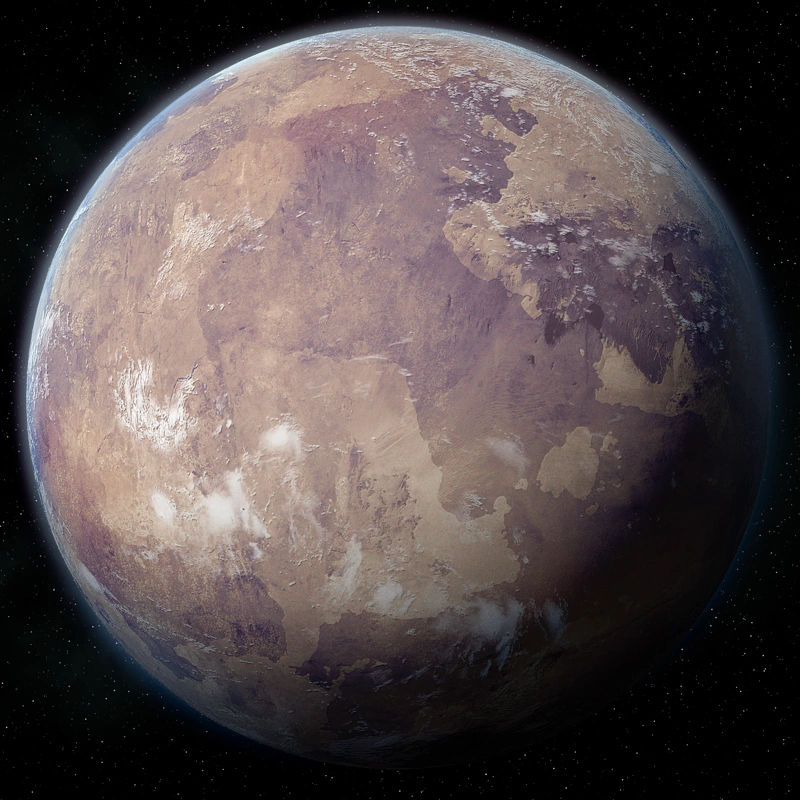Планета Мустафар - на этой планете у Дарта Вейдера был собственный замок, и именно на этой планете произошла дуэль Энакина с Оби-Ваном.

Замок Дарта Вейдера На Мустафаре:
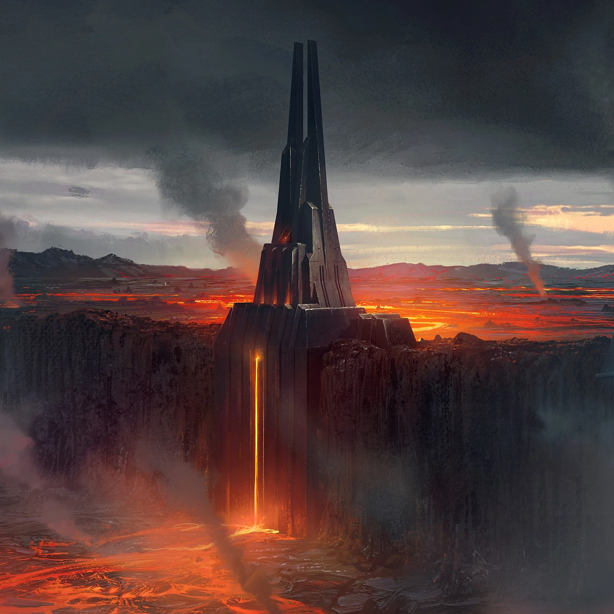Вторая Звезда Смерти - именно здесь Дарт Вейдер снова стал Энакином Скайуокером, скинув оригинальное тело Палпатина в шахту.
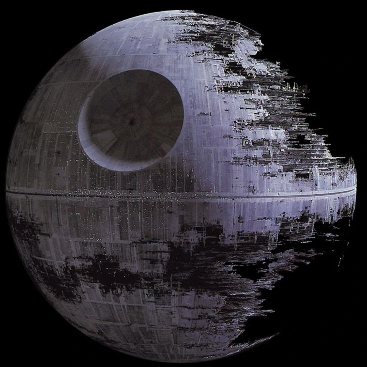Экзегол - здесь произошла окончательная смерть Дарта Сидиуса.
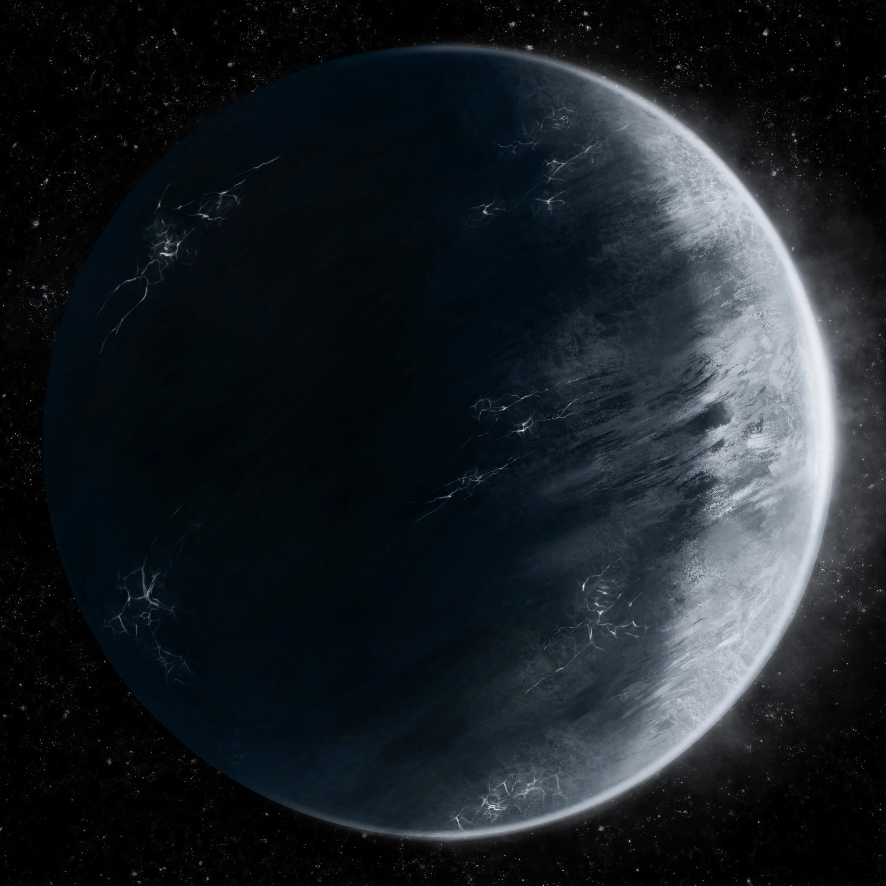Игры по вселенной
По вселенной звёздных войн сделали очень много компьютерных игр:
Например: Batllefront
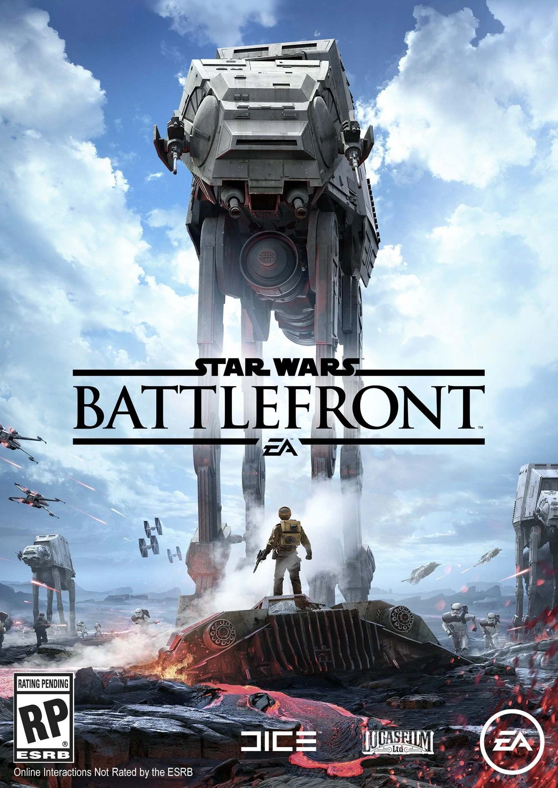Batllefront 2

Star Wars: Jedi fallen order
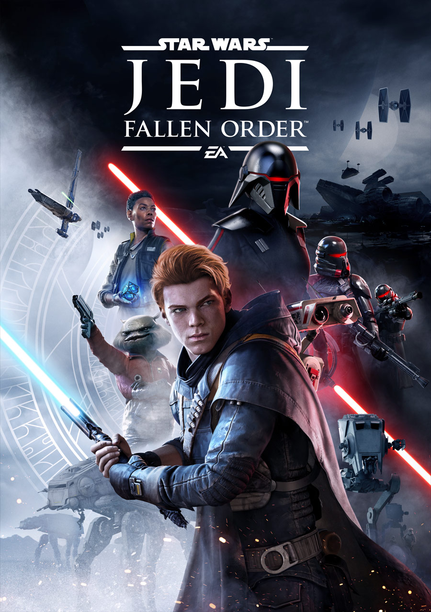LEGO Star Wars: The Skywalker Saga
LEGO Star Wars: The Force Awakens, и это только несколько из огромного списка
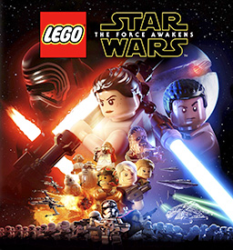